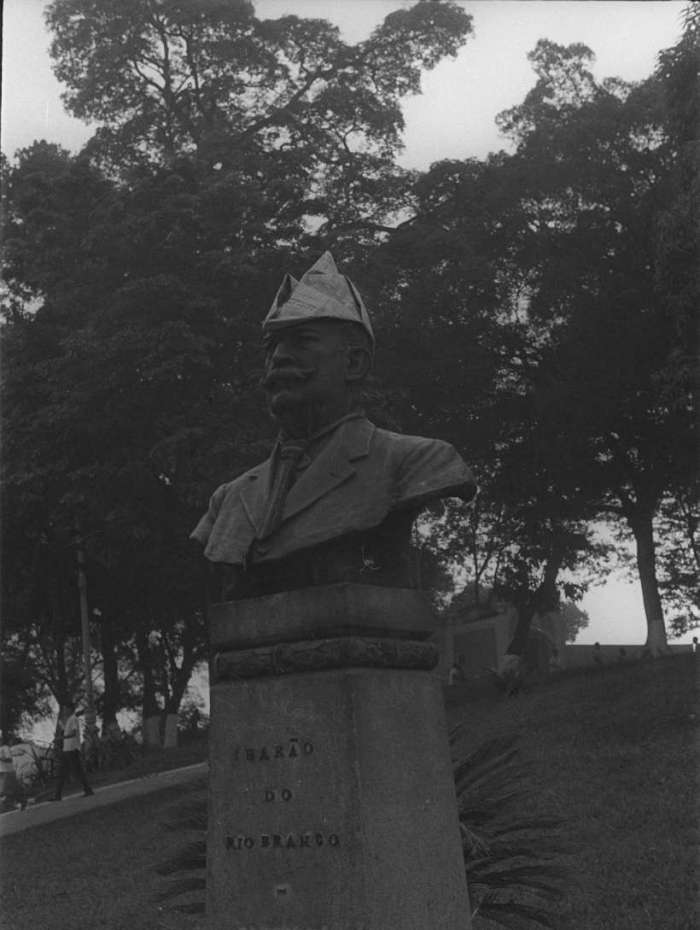
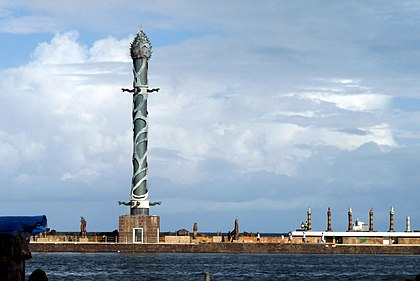
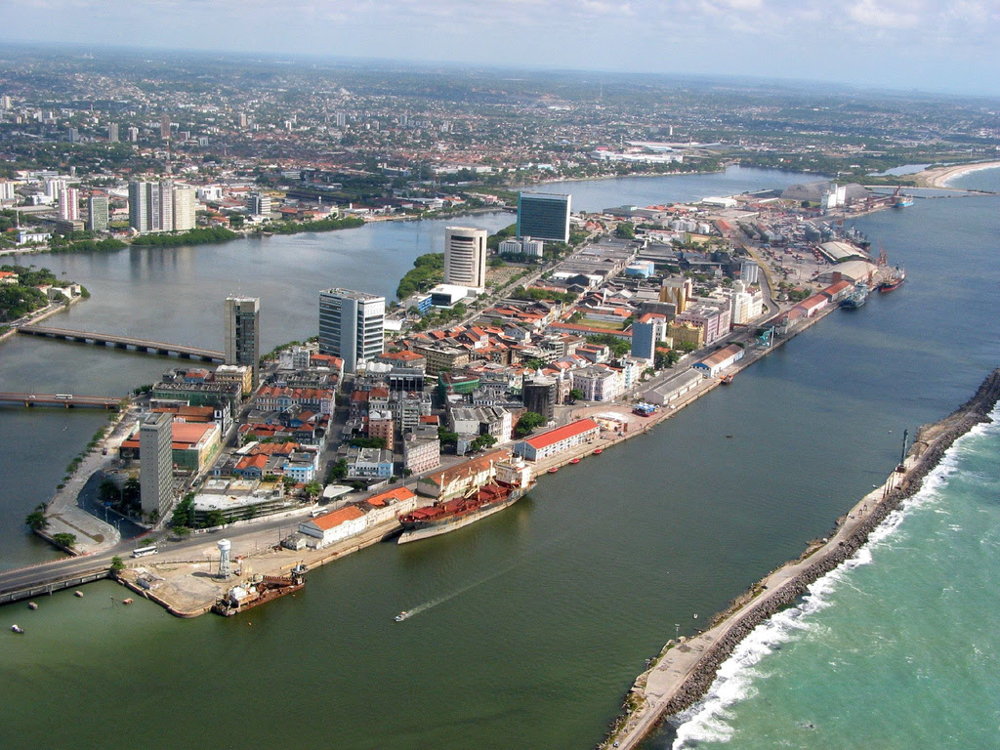

Artes contidas na Praça do Marco Zero
Busto de Bronze do Barão do Rio Branco
Uma das artes que foram esculpidas nesse icônico lugar, foi a escultura do francês Félix Charpeutier, colocada ali em 1917, em bronze com uma altura de 2,5m e foi inaugurada, sob um pedestal em pedra de 4,20m, esculpido por Corbiniano Vilaça, em 19 de agosto do mesmo ano. Dando a obra uma altura de 7m.
Parque das Esculturas de Francisco Brennand
O Parque das Esculturas Francisco Brennand é um museu de arte a céu aberto localizado na cidade do Recife, capital do estado brasileiro de Pernambuco. Constitui um dos principais feitos do artista plástico pernambucano Francisco Brennand. Para chegar até o parque, o visitante deve entrar numa embarcação, que sai de um pequeno píer no Marco Zero, e cruzar o Estuário do Porto do Recife indo até a entrada do parque ou ir de carro pela Avenida Brasília Teimosa.
Características da localização do Marco Zero
Estuário do Porto do Recife
O norte da praça é banhado pelo estuário do porto do Recife, formado pelo Rio Capibaribe. O estuário é protegido por um dique natural, local em que se encontra o Parque das Esculturas com a famosa obra Coluna de Cristal de 32 metros de altura e inspirada em uma flor descoberta por Burle Marx e varias outras obras em cerâmica do artista Francisco Brennand. No dique encontra-se também a Casa de Banhos, que não existe mais, e o Farol do Recife. O dique tem uma extensão 4km de comprimento e começa no bairro de Brasília Teimosa.
